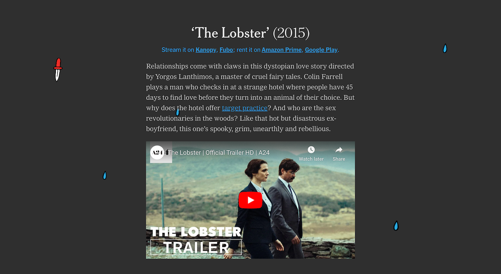
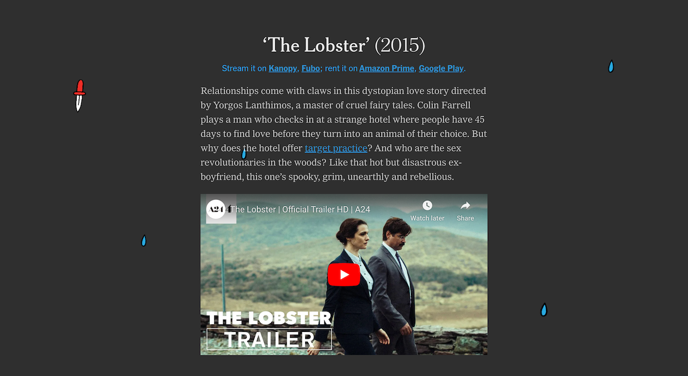

سارة المختار


36 Hours RedesignI led the redesign of this long-standing column. My goal was to push it to become a more visual and useful digital tool for readers. I prototyped several designs, including ones that would totally depart from the original structure. But this was a lesson in compromise that led to a design that prioritizes photography, short lists, and navigation but works with the skills and desires of the travel team. I also helped train the editors in the new production process that allowed them to publish the column weekly.
Year in Graphics 2020I wanted to turn this beloved, yearly project into a way for readers to get to know the people on the graphics and design teams as well as our work. I interviewed my coworkers to add their voices to the piece and convinced my editor that we should include some of our beautiful designs that were printed in the newspaper. The result was a much more dynamic interactive than we had done in the past.

One Million Deaths From CovidThe challenge with this story was to convey the magnitude of lives lost to Covid. We decided to try to do that immediately with the top of the piece, so that was a major design focus for me. As the user scrolls, the dots become denser and impossible to count, just as the loss is difficult to wrap one’s mind around. The design also needed to support the graphics, so I structured the piece by using layers that take the reader in and out of the visualizations.


MENA IdentityAs a person of MENA descent, this project was especially meaningful to me, but it wasn’t easy to turn more than 5,000 survey responses into one story! We learned a lot about communication as we tried to follow up with responders for more detail and photos. Eventually, illustraton became our primary tool to show both the diversity and connectedness we found within the group.

The New SkatersI’m particularly proud of this piece because it was one of the first that allowed me to experiment with design. I collaborated with great editors who were very open to my perspective and fun to work with. The story is about community, so my goal was to showcase as many voices and portraits as I could while injecting a bit of the irreverence that is a part of skate culture.


 

Love/Hate Valentine’s Day MoviesThis is one of my favorite projects because I got to work with such whimsical illustrations. It was so fun thinking through what the animations and interactions could be and I learned how to use Intersection Observer to transition between the two lists.

American DowntownsThis piece is a straightforward collection of ten essays, but the simple structure allowed me to focus on the details of layout, transition, and typography. I worked closely with the photo editor to select photos that speak to each other and arrange them in a way that directs the reader’s eye through each essay. It was a really enjoyable design exercise.


Extreme HeatThe team realized while working on this story that one of the hardest things to convey to a reader through a screen is heat. I worked with the videographers to figure out the kinds of shots we wanted. The design became centered around taking full advantage of that media to create an immersive experience. We also used design elements like labels and color to further help readers imagine how the environment felt.


Women in AfghanistanWhen editors came to me with this series of portraits, I felt deeply inspired by their artistic quality and wanted to create a gallery-like experience for the reader. Adding in these women’s voices and finding visual parallels between some of the photos created beautiful moments of connection.